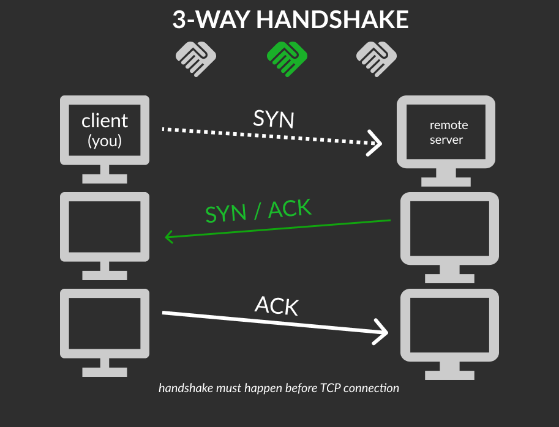
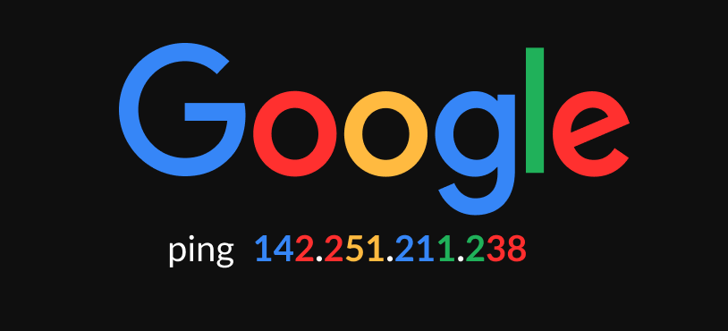

Beginner’s introduction to the basic principles of networking. The process of how computers communicate.
Intro Networking
The aim of this room is to provide a beginner’s introduction to the basic principles of networking. Networking is a massive topic, so this really will just be a brief overview; however, it will hopefully give you some foundational knowledge of the topic, which you can build upon for yourself.
OSI Model
The OSI (Open Systems Interconnection) Model is a standardised model, the theory behind computer networking.
There are 7 layers:
- Application
- Presentation
- Session
- Transport
- Network
- Data Link
- Physical
Some mnemonics for remembering the OSI model (P D N T S P A | A P S T N D P):
- (bottom-up) “Please Do Not Throw Salami Pizza Away”
- (top-down) “All People Seem To Need Data Procesing”
- (bottom-up) “Picard Does Not Teach Spanish Programming Apps”
- (bottom-up) “Pet Dinosaur Next To Special Placed Area”
- (top-down) “All Pickles Sent To National Dancing Pets”
Task 2
Layer 7 - Application
- essentially provides networking options to programs running on a computer
- provides an interface for use to transmit data
Layer 6 - Presentation
- gets data not in standardized format
- translates data into standardized format + encryption + compression
- sends standardized data
Layer 5 - Sessions
- tries to set up a connection with the other computer across the network
- IF error Then stop process
- IF connection Then maintain synch communication (unique: host & remote computer)
- (synch connection) data is then sent
Layer 4 - Transport
- chooses the protocol which data is to be transmitted (TCP and UDP)
- TCP transmission control protocol is connection-based, connection lasts for duration of request (all packets are sent, any lost packets are resent)
- UDP user datagram protocol throws packets at the receiving computer (speed over data accuracy, ex: streaming video)
- IF protocol selected Then divide transmission into bytes (TCP: segments | UDP: datagrams)
Layer 3 - Network
- locates the destination of your request (IP address and finds best route)
- dealing with IP addresses is Logical addressing
- IPv4 format = 192.168.1.1
Layer 2 - Data Link
- gets data and checks for corruption
- focuses on the physical addressing of the transmission
- gets packet that has IP address and the MAC address of endpoint
- every computer has Network Interface Card (NIC) which has Media Access Control (MAC) address {can’t be changed but can be spoofed}
- translate data for transmisison
Layer 1 – Physical
- the physical hardware of computer
- electrical pulses are sent & received over a network
- converts binary data of the transmisison into signals and transmits them (also signals to binary data)
Question: Which layer would choose to send data over TCP or UDP?
- 4
Question: Which layer checks received information to make sure that it hasn’t been corrupted?
- 2
Question: In which layer would data be formatted in preparation for transmission?
- 2
Question: Which layer transmits and receives data?
- 1
Question: Which layer encrypts, compresses, or otherwise transforms the initial data to give it a standardised format?
- 6
Question: Which layer tracks communications between the host and receiving computers?
- 5
Question: Which layer accepts communication requests from applications?
- 7
Question: Which layer handles logical addressing?
- 3
Question: When sending data over TCP, what would you call the “bite-sized” pieces of data?
- segments
Question: [Research] Which layer would the FTP protocol communicate with?
- 7
Task 3
Encapsulation is as the data is passed down each layer of the model, more information containing details specific to the layer is added to the start of the transmission.
The data link layer also adds a piece on at the end of the transmission, which is used to verify that the data has not been corrupted on transmission.
In the transport layer the encapsulated data is referred to as a segment or a datagram (depending on whether TCP or UDP has been selected as a transmission protocol).
At the Network Layer, the data is referred to as a packet. The packet gets passed down to the Data Link layer it becomes a frame, the frame transmitted across a network has been broken down into bits.
When message received, process is physical layer to application layer (de-encapsulation).

Question: How would you refer to data at layer 2 of the encapsulation process (with the OSI model)?
- frames
Question: How would you refer to data at layer 4 of the encapsulation process (with the OSI model), if the UDP protocol has been selected?
- UDP: datagrams
Question: What process would a computer perform on a received message?
- de-encapsulation
Question: Which is the only layer of the OSI model to add a trailer during encapsulation?
- data link
Question: Does encapsulation provide an extra layer of security (Aye/Nay)?
- aye
Task 4
The OSI model is one model, TCP/IP model is another (older). Transmission Control Protocol and the Internet Protocol.
4 layers to TCP/IP:
- Application
- Transport
- Internet
- Network Interface [Data Link & Physical]
| OSI | TCP/IP |
|---|---|
| Application | App |
| Presentation | App |
| Session | App |
| Transport | Transport |
| Network | Internet |
| Data Link | Network Interface |
| Physical | Network Interface |
- Encapsulation/ de-encapsulation works the same as OSI model.
TCP is a connection-based protocol, you must have stable connection first before sending any packets between computers (3-way handshake).
- your computer first sends a special request to the remote server indicating that it wants to initialise a connection SYN synchronise bit. First contact.
- The server will then respond with a packet containing the SYN bit, as well as another “acknowledgement” bit, called ACK.
- Finally, your computer will send a packet that contains the ACK bit by itself, confirming that the connection has been setup successfully.
- the three-way handshake must be carried out before a connection can be established using TCP.

Questiion: Which model was introduced first, OSI or TCP/IP?
- TCP/IP
Question: Which layer of the TCP/IP model covers the functionality of the Transport layer of the OSI model (Full Name)?
- transport
Question: Which layer of the TCP/IP model covers the functionality of the Session layer of the OSI model (Full Name)?
- application
Question: The Network Interface layer of the TCP/IP model covers the functionality of two layers in the OSI model. These layers are Data Link, and?.. (Full Name)?
- physical
Question: Which layer of the TCP/IP model handles the functionality of the OSI network layer?
- internet
Question: What kind of protocol is TCP?
- connection-based
Question: What is SYN short for?
- synchronise
Question: What is the second step of the three way handshake?
- syn/ack
Question: What is the short name for the “Acknowledgement” segment in the three-way handshake?
- ack
Task 5
Some of the command line networking tools that we can use in practical applications.
The ping command is used when we want to test whether a connection to a remote resource is possible.
ping <target>ping google.comreturns the Google server not the url requestedping 217.160.0.152

Question: What switch lets you change the interval of sent ping requests?
-i
Question: What switch would allow you to restrict requests to IPv4?
-4
Question: What switch would give you a more verbose output?
-v
Task 6
The logical follow-up to the ping command is ‘traceroute’. Traceroute can be used to map the path your request takes as it heads to the target machine.
Traceroute allows you to see each of these connections – it allows you to see every intermediate step between your computer and the resource that you requested.
traceroute <destination>traceroute google.com- Windows:
tracert
Question: Use traceroute on tryhackme.com . Can you see the path your request has taken?
- no answer needed
Question: What switch would you use to specify an interface when using Traceroute?
-i
Question: What switch would you use if you wanted to use TCP SYN requests when tracing the route?
-T
Question: Which layer of the TCP/IP model will traceroute run on by default (Windows)?
- internet
Task 7
Domain Name System (DNS) saves us from rmembering IP addresses. You can find the IP address of a website using whois.
whois <target>whois bbc.co.ukwhois facebook.com
Question: What is the registrant postal code for facebook.com?
- 94025
Question: When was the facebook.com domain first registered (Format: DD/MM/YYYY)?
- 29/03/1997
Question: Perform a whosi on microsoft.com. Which city is the registrant based in?
- Redmond
Question: [OSINT] What is the name of the golf course that is near the registrant address for microsoft.com?
- Bellevue golf course
Question: What is the registered Tech Email for microsoft.com?
msnhst@microsoft.com
Task 8
At the most basic level, DNS allows us to ask a special server to give us the IP address of the website we’re trying to access.
- you request for google.com
- computer checks cache for stored websites
- (recursive DNS server) computer requests DNS from server (root name server)
- server returns the IP address (Top Level Domain server (TLD))
- TLD deals with ‘.com’,‘co.uk’, etc tryhackme.com
dig <domain> @<dns-server-ip>dig google.com @1.1.1.1
An interesting piece of information that dig gives us is the TTL (Time To Live) of the queried DNS record. The TTL of the record tells your computer when to stop considering the record as being valid (request data again).
Question: What is DNS short for?
- domain name system
Question: What is the first type of DNS server your computer would query when you search for a domain?
- recursive
Question: What type of DNS server contains records specific to domain extensions (i.e. .com, .co.uk, etc)? Use the long version of the name.
- top-level domain
Question: Where is the very first place your computer would look to find the IP address of a domain?
- local cache
Question: Google runs two public DNS servers. One of them can be queried with the IP 8.8.8.8, what is the IP address of the other one?
- 8.8.4.4
Question: If a DNS query has a TTL of 24 hours, what number would the dig query show?
- 86400